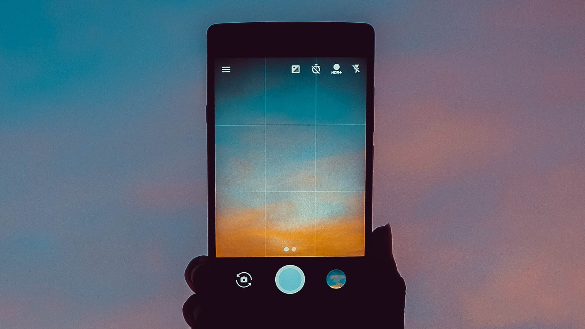

في دول الخليج، يحتل سناب شات مكانة خاصة في الحياة اليومية لكثير من الناس، خاصة الشباب والعائلات. يتابعون من خلاله أصدقاءهم، والمطاعم والمحلات التي يحبونها، ويشاهدون يوميات أصحاب المشاريع وهم يحضّرون الطلبات ويستقبلون البضاعة الجديدة. هذه الطبيعة اليومية والعفوية تجعل سناب شات قناة مناسبة جدًا للمشاريع الصغيرة التي تريد أن تكون قريبة من عملائها.
في هذا الدليل نشرح كيف تستخدم سناب شات لمشروعك خطوة بخطوة: تجهيز الحساب، وأنواع المحتوى، والسناب اليومي، والتفاعل، والإعلانات، وتحويل المشاهدين إلى طلبات.
لماذا يناسب سناب شات المشاريع الصغيرة في الخليج؟
- القرب والعفوية: المحتوى اليومي غير المصقول يبدو حقيقيًا ويبني ثقة شخصية مع صاحب المشروع.
- الطابع المحلي: كثير من المستخدمين يتابعون أنشطة في مدينتهم، ما يناسب المطاعم والمحلات والخدمات المحلية.
- التواصل المباشر: يستطيع المشاهد الرد على السناب برسالة مباشرة، فتتحول المشاهدة بسرعة إلى سؤال ثم طلب.
- تكلفة إنتاج منخفضة: كل ما تحتاجه جوالك ووقت قليل يوميًا.
كما أن كثيرًا من المستخدمين يفتحون التطبيق عدة مرات في اليوم لمتابعة الأصدقاء والعائلة، فتظهر سناباتك لهم وسط يومهم الطبيعي، لا كإعلان منفصل. وهذا يمنحك فرصة لتكون جزءًا من روتين عملائك اليومي إذا قدمت لهم محتوى يستحق المتابعة.
ومع ذلك، اسأل نفسك أولًا: هل جمهورك موجود فعلًا على سناب شات؟ إذا كان عملاؤك في الخليج ومن فئات عمرية شابة أو عائلية، فالإجابة غالبًا نعم.
جهّز الملف العام لمشروعك
أنشئ ملفًا عامًا للأعمال أو حسابًا عامًا يتيح للناس متابعتك ورؤية معلومات مشروعك. اهتم بهذه العناصر:
- اسم المشروع وصورة واضحة متوافقة مع هويتك التجارية.
- نبذة قصيرة: ماذا تقدم، وأين، وكيف يطلب العميل.
- رابط لمتجرك أو لواتساب أو لصفحة الطلب.
- الموقع على الخريطة إن كان لديك محل يزوره العملاء.
ماذا تنشر؟ أفكار محتوى عملية
| النوع | أمثلة |
|---|---|
| يوميات المشروع | فتح المحل صباحًا، وتحضير الطلبات، ووصول بضاعة جديدة |
| عرض المنتجات | تفاصيل المنتج عن قرب، والمقاسات، والألوان الحقيقية |
| آراء العملاء | رسائل شكر أو صور العملاء بعد استئذانهم وإخفاء بياناتهم |
| تعليمي قصير | طريقة استخدام المنتج أو العناية به، ونصيحة سريعة |
| عروض محدودة | عرض اليوم، أو كمية محدودة، أو كود خصم لمتابعي سناب |
| أسئلة وتصويت | اختر بين لونين، أو ما المنتج الذي تريده الأسبوع القادم |
اجعل الغلبة للمحتوى اليومي المفيد والقريب، وخفف من الإعلانات المباشرة حتى لا يشعر المتابع أن حسابك مجرد إعلان مستمر. ويمكنك توليد أفكار يومية بسرعة باستخدام البرومبتات المجانية.
السناب اليومي: الاستمرار هو السر
المتابعون يعتادون على حسابك عندما يجدون فيه شيئًا جديدًا كل يوم. لا تحتاج أن تنشر طوال اليوم؛ يكفي عدد قليل من السنابات المتتابعة التي تحكي قصة قصيرة: بداية اليوم، ومنتج مميز، وطلب يُجهز، وتذكير بطريقة الطلب. ونصائح للتصوير:
- صوّر عموديًا وبإضاءة جيدة، واقترب من المنتج لتظهر تفاصيله.
- تحدث بلهجتك الطبيعية وباختصار، وأضف نصًا قصيرًا لمن يشاهد دون صوت.
- اظهر بنفسك أو أظهر يديك وأنت تعمل؛ فالوجه أو الصوت الحقيقي يقرّب المتابع.
- تجنب تصوير بيانات العملاء أو عناوينهم أو أرقام الطلبات.
ولتنظيم ذلك، يساعدك مخطط محتوى سناب شات بالعربي على توزيع أفكار الأسبوع والعروض والمناسبات مسبقًا.
احفظ أفضل المحتوى وأعد استخدامه
السناب اليومي يختفي، لكن جهدك لا يجب أن يضيع. احفظ أفضل السنابات على جوالك أولًا بأول، وثبّت في ملفك العام ما يجيب عن الأسئلة المتكررة، مثل طريقة الطلب، والأسعار، ومناطق التوصيل، وآراء العملاء، إذا كانت هذه الميزة متاحة لحسابك. فالمتابع الجديد يحتاج أن يفهم مشروعك بسرعة دون أن ينتظر سناب الغد.
ويمكنك أيضًا تحويل المقاطع الناجحة إلى ريلز على إنستغرام أو فيديو على تيك توك بعد تعديل بسيط يناسب كل منصة، كما شرحنا في دليل تيك توك للمشاريع الصغيرة. وبهذا تصوّر مرة واحدة وتنشر في أكثر من مكان، فتوفر وقتك وتصل إلى جمهور أوسع. واحرص في كل ذلك على احترام خصوصية العملاء والعاملين معك، فلا تنشر وجوههم أو رسائلهم إلا بموافقتهم الواضحة.
التفاعل وتحويل المشاهد إلى عميل
- رد على الرسائل بسرعة وبأسلوب ودود، وجهز ردودًا للأسئلة المتكررة عن السعر والتوصيل.
- اذكر طريقة الطلب بوضوح في نهاية سنابات المنتجات.
- انقل الطلب إلى واتساب أو المتجر إن كان ذلك أسهل لعملائك، كما في دليل التسويق عبر واتساب.
- استخدم أكوادًا أو عروضًا خاصة بمتابعي سناب حتى تعرف الطلبات القادمة منه.
المواسم والمناسبات
سناب شات مناسب جدًا لمواسم الخليج: رمضان، والعيدين، والأيام الوطنية، والعودة للمدارس، والجمعة البيضاء. خطط للمحتوى قبل الموسم بأسابيع، وصوّر التجهيزات، وأعلن عن العروض بالتدريج بدل يوم واحد فقط. وإذا كنت تخطط لحملة تخفيضات، فراجع دليل حملات الجمعة البيضاء لحساب الخصم دون خسارة أرباحك.
الإعلانات المدفوعة والتعاون مع المشاهير
بعد أن تعرف أي محتوى يتفاعل معه جمهورك، يمكنك تجربة الإعلانات المدفوعة على المنصة بميزانية صغيرة، واستهداف المدينة والفئة العمرية المناسبة، ثم زيادة الإنفاق على ما ينجح فقط. والخيار الآخر هو التعاون مع صناع محتوى محليين يتابعهم عملاؤك؛ اختر من يناسب جمهوره عملاءك لا الأكثر متابعين، واتفق كتابيًا على المطلوب، والتزم بالإفصاح عن الإعلان وفق الأنظمة في بلدك. وللتفاصيل راجع دليل التسويق عبر المؤثرين.
قِس النتائج
راجع إحصاءات الحساب أسبوعيًا: عدد المشاهدات، ونسبة من أكمل القصة، وعدد الردود والرسائل، والنقرات على الرابط. والأهم: كم رسالة تحولت إلى طلب؟ اسأل العملاء الجدد كيف عرفوك، واستخدم أكواد الخصم الخاصة لقياس المبيعات. وللتعمق راجع دليل قياس نتائج التسويق.
أخطاء شائعة
- نشر إعلانات فقط دون يوميات أو محتوى مفيد.
- الانقطاع لأيام ثم العودة بكثافة.
- سنابات طويلة جدًا تفقد المشاهد قبل أن يصل للمنتج.
- تجاهل الرسائل أو الرد المتأخر.
- تصوير بيانات العملاء أو محتوى دون إذن أصحابه.
أسئلة شائعة
هل سناب شات مناسب لكل المشاريع؟
يناسب غالبًا المشاريع التي يتواجد عملاؤها في الخليج ويمكن عرض منتجاتها أو خدماتها بصريًا، مثل المطاعم والأزياء والعطور والهدايا والخدمات المحلية. جرّبه لفترة وقِس النتائج قبل أن تحكم.
كم سنابًا أنشر يوميًا؟
لا يوجد رقم ثابت. الأهم أن تنشر يوميًا أو شبه يومي سنابات قصيرة متتابعة تحكي قصة واضحة، بدل عدد كبير متفرق.
هل يجب أن أظهر بوجهي؟
ليس شرطًا، لكن ظهور صاحب المشروع أو صوته يبني ثقة أكبر. يمكنك الاكتفاء بإظهار يديك أثناء العمل مع تعليق صوتي.
هل أبدأ بالإعلانات المدفوعة مباشرة؟
الأفضل أن تبني محتوى يوميًا أولًا وتعرف ما يتفاعل معه جمهورك، ثم تجرب الإعلانات بميزانية صغيرة على العروض والمحتوى الذي أثبت نجاحه.
كيف أعرف أن سناب شات يجلب مبيعات؟
استخدم كود خصم أو عرضًا خاصًا بمتابعي سناب، وتابع الرسائل التي تتحول إلى طلبات، واسأل العملاء الجدد كيف عرفوك.
نكتب محتوى تسويقيًا عمليًا بالعربية لمساعدة أصحاب المشاريع على النمو بذكاء.